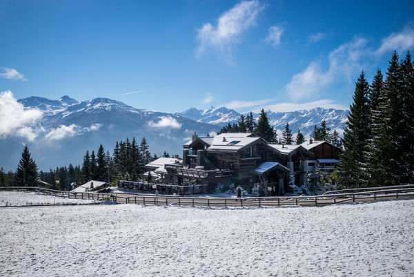
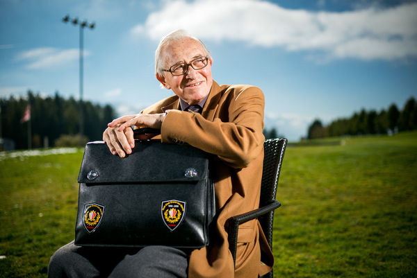
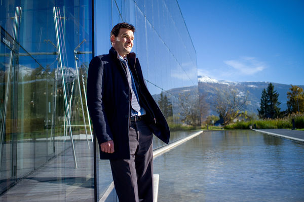

FORFAITS FISCAUX
Crans-Montana, la station accro aux forfaitaires
par Marie PARVEX | Photos : Olivier Maire
 Chantiers en construction sur le territoire de Crans-Montana. La station du Valais accueille près d'un demi-millier de forfaits fiscaux.
Chantiers en construction sur le territoire de Crans-Montana. La station du Valais accueille près d'un demi-millier de forfaits fiscaux.
Avec 500 domiciliés, la station de ski de Crans-Montana est la reine valaisanne des forfaits fiscaux. Elle a créé une dépendance économique majeure envers ces riches étrangers. Petite géographie du forfaitaire, des quartiers chics de la station au petit village de Lens
-
Les finances communales, les affaires immobilières, les fiduciaires, les banques dépendent en partie des 500 riches étrangers domiciliés dans les six communes qui constituent Crans-Montana. Les infrastructures aussi. Ainsi, les remontées mécaniques de la station viennent d’être presque entièrement rachetées par le richissime roi de l’immobilier tchèque, Radovan Vitek, la quarantaine et forfaitaire. Berne ayant du mal à croire à sa domiciliation, l’homme d’affaire aurait ainsi cherché à convaincre par l’investissement.
Le projet de village touristique à Aminona, devisé à 650 millions, est aussi dans les mains d’un forfaitaire, Evgeny Kogan, âgé de 25 ans. Comme la plupart des hôtels récemment rénovés. Même les skis des enfants de la région sont offerts par le Sheikh Yamani, un roi du pétrole saoudien.
Les six communes sont très diversement dotées en forfaitaires. Lens en compte environ 210 pour une enveloppe de 5,7 millions de francs. C’est avant tout parce que les plus beaux terrains encore disponibles dans la station sont situés sur son territoire. Elle est suivie de près par Chermignon, dont les terres s’étendent autour du golf et du quartier mondain de Crans, avec 3,3 millions d’impôts à forfait pour une petite centaine de domiciliés. Au contraire, Mollens à l’extrémité est du coteau ne compte que 5 personnes imposées sur la dépense
Montant annuel perçu au titre de l'imposition à la dépense
Lens : 5'700'000 CHF
Chermignon : 3'300'000 CHF
Randogne : 2'400'000 CHF
Montana : 2'000'000 CHF
Icogne : 415'000 CHF
Mollens : 84'000 CHF
«La capacité d’investissement de ma commune dépend au deux tiers des 5,7 millions d’impôts que paient nos 210 forfaitaires », explique David Bagnoud, président de Lens. Et cela sur un revenu communal global de 24 millions. « Bien sûr que c’est un risque, mais dîtes-moi, qu’est-ce que vous me conseillez pour faire vivre ma commune ? », demande-t-il. En 1995, le Valais comptait 446 forfaits contre 1389 aujourd'hui. Il y en a 1316 dans le Valais romand.
-
 Vue de chalets des Mayens au-dessus de la station
Dans les alpages au-dessus de Crans-Montana, les immenses chalets dominent la vallée du Rhône face au soleil couchant. A Plan-Mayens, la route sinue dans la forêt et se divise en plusieurs rues privées et sans issue. Dissimulées derrière les arbres, on devine à peine les grandes propriétés. Dans ce quartier chic prisé des forfaitaires, malgré l’interdiction de construire des résidences secondaires, on propose encore des parcelles de 7000 m2 pour 17 millions de francs. Plusieurs de ces demeures sont en vente sur les sites des agents immobiliers de luxe de la station. L’annonce mentionne parfois « doit être vendu à un résident ». Autrement dit, à un Suisse ou à un forfaitaire pour respecter les contingents de vente aux étrangers.
Evolution de la part des étrangers dans la commune de Lens (en %)
-
Au pied du coteau de Plan-Mayens, Fidag, le poids lourd des fiduciaires valaisannes, gère la majeure partie des forfaits de la station, selon les dire de plusieurs de ses concurrents. La fiscalité des étrangers représente 20 % des affaires. « Ce sont majoritairement des retraités entre 65 et 70 ans », raconte le directeur Daniel Emery. « Je les rencontre presque tous les jours dans la station où ils coulent des jours paisibles ». La qualité de vie, la sécurité, l’amour de la région, Daniel Emery décrit un univers de carte postale.
Paysage de la couronne impériale du Val d'Anniviers depuis Crans- Montana
Dans les rues chics, banques, fiduciaires et agents immobiliers se disputent les clients devenus plus rares depuis que le ton se durcit sur les fronts fiscaux, bancaires et immobiliers. Symphony Family Office y fait de la gestion de fortune, de la domiciliation fiscale, pilote des investissements et propose de l’immobilier. « Nous avons par exemple géré, pour le compte d'un forfaitaire, le rachat de l'hôtel "Le Mont-Blanc" qui est devenu "Le Crans" », explique son patron, Philippe Udry, spécialisé dans la clientèle belge et anglaise.
La société de gestion de fortune, Bruellan, a aussi un pied à terre à Crans-Montana, dirigé par le vice-président de Chermignon, l’une des six communes qui forment la station. Un peu plus loin, la banque privée, Julius Bär, dont le comité consultatif est présidé par l’ancien conseiller d’Etat, Serge Sierro. Ce dernier a ouvert un cabinet d’avocat en 2001. «La démarche de mes clients commence dans leur pays de résidence, dans un cabinet fiscal ou d'avocat. Je consacre tout mon temps aux étrangers que je domicilie et pour qui j’organise des rencontres et des conférences », explique-t-il.
«Les résidences secondaires, achetées avec de l’argent déclaré ou non, étaient un modèle d’affaire en Valais »
La BCVs a aussi pignon sur rue. « Cela s'inscrit dans notre volonté de proximité avec la clientèle domiciliée et présente en Valais, mais ne figure pas au centre de nos priorités», précise Jean-Daniel Papilloud, président du conseil d’administration de la BCVs, qui dit ne disposer d’aucune statistique quant au volume que représente ce marché pour la banque valaisanne. «Les résidences secondaires, achetées avec de l’argent déclaré ou non, étaient un modèle d’affaire en Valais », estime Philippe Udry, qui est aussi un ancien cadre de Crédit Suisse. C’est terminé depuis 2 à 3 ans, mais si on supprime les forfaits les établissements bancaires n'auront plus de raison de maintenir des services financiers sophistiqués, la formation et l'emploi seront les grands perdants.»
Evolution du nombre de forfaits en Valais et dans les autres cantons
-
 (Emmanuel Berrod / WIPO)
Gaston Barras a été président de Chermignon pendant 20 ans. Le territoire de « sa » commune s’étire autour du golf, dont il est l’instigateur, et accueille plusieurs forfaits fiscaux. Gaston Barras est aussi promoteur et agent immobilier depuis 60 ans. « J’ai domicilié une centaine de forfaitaires dans ma vie », dit-il, attablé au restaurant du golf. Il participe aussi largement aux rencontres mondaines comme la Nuit des Neiges, manifestation caritative trentenaire qui réunit les grandes fortunes.
-
 (Maquette Som)
Les riches étrangers ont aussi investi au village de Lens. Sur une colline, avec vue sur les ruelles, le clocher et le coucher du soleil. En 2001, il y avait 135 étrangers domiciliés au village, contre 237 sujourd'hui. Les chalets y sont cossus. Tellement que la commune a décidé de limiter les constructions à 300 m2 habitable jusqu’à 1300 mètres d’altitude. « On a senti une certaine pression des résidences secondaires et principales sur le village avec des projets allant jusqu’à des surfaces de 1000 m2 », raconte le président de la commune.
A la terrasse du petit café où se retrouvent les Lensards, un homme sirote une bière au soleil. Lui n’a pas d’avis sur les forfaits. De toute façon, il est propriétaire du dernier terrain à bâtir sur la colline aux étrangers.
Crédits
Dossier : Marie Parvex
Réalisation : Jean Abbiateci
Photos : Olivier Maire Sources des données : OFS, Communes du Valais, Conférence des directeurs et directrices des finances